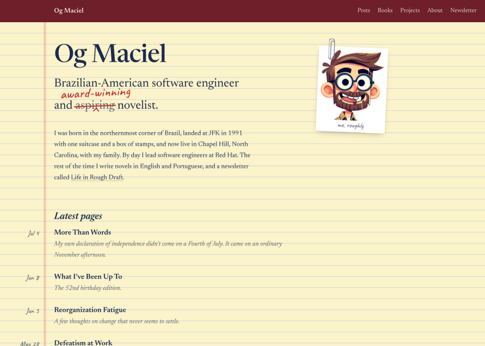
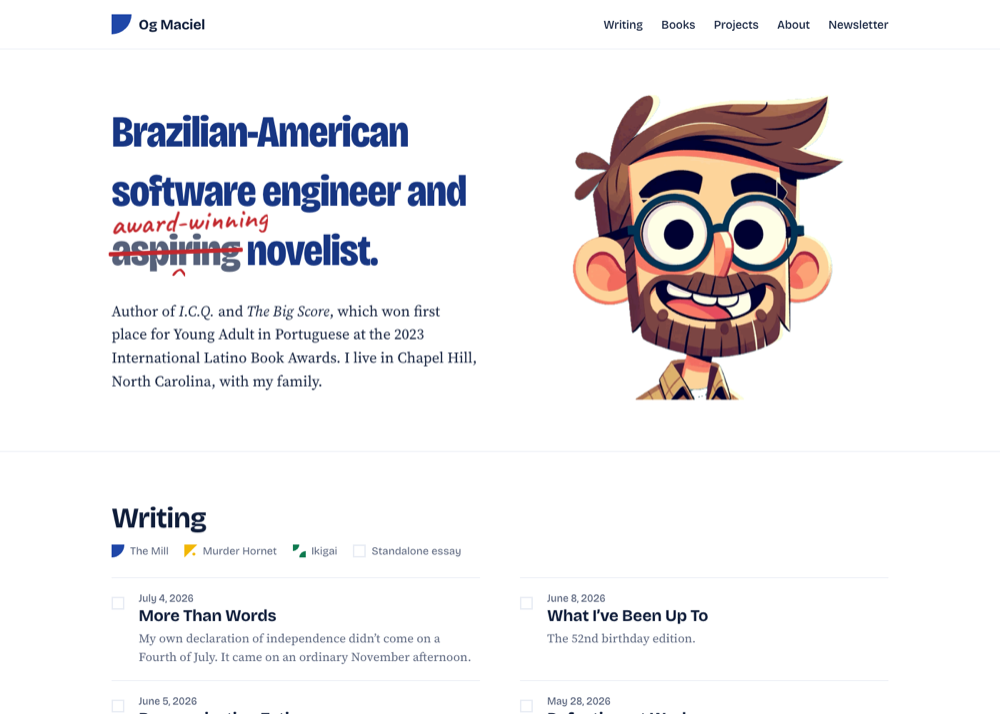
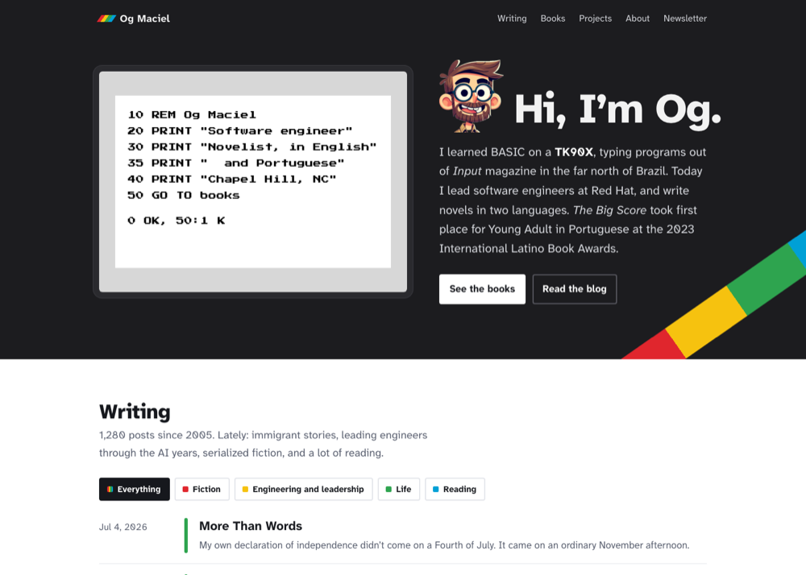

2. Azulejo
Brazilian modernism, after Athos Bulcão’s tile walls in Brasília, with your animated avatar up front. Yellow and green tiles mark your series: The Mill, Murder Hornet, and Ikigai.
Each mockup uses real content from the site: recent posts, the five book covers, the Latino Book Awards win, and the Life in Rough Draft newsletter. Open the home page and a post page for each, and try them on a phone-width window too.


